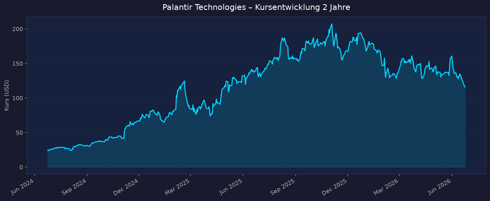
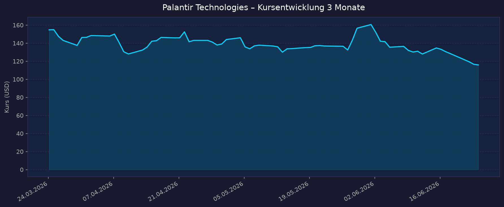

Weltraum-Einordnung: Palantir ist ein indirekter Weltraum-Play — kein Pure-Play (keine Raketen/Satelliten), sondern ein profitabler, schuldenfreier Defense-/KI-Software-Konzern. Der Space-Bezug läuft über Verteidigungs- und Raumfahrtbehörden: Foundry/Gotham/AIP als Datenplattformen für US Space Force, NASA-Missionen und Satelliten-Auswertung (Maven). „Weltraum" ist nur ein Teilsegment der breiten Defense-/Commercial-Story. Kernfrage dieser Analyse: starkes Wachstum vs. extremes Bewertungsrisiko.
📈 1. Kursentwicklung
Aktueller Kurs: ~115,91 USD | Veränderung heute: ca. −6,7 % (volatil, nahe 52-Wochen-Tief)
Chart – 2 Jahre

Chart – 3 Monate

| Zeitraum | Kurs Start | Kurs Ende | Veränderung |
|---|---|---|---|
| 2 Jahre | ~24 USD (Mitte 2024) | ~116 USD | ca. +380 % |
| 3 Monate | ~150 USD | ~116 USD | ca. −23 % |
| 52-Wochen-Hoch | — | 207,52 USD | — |
| 52-Wochen-Tief | — | 113,90 USD | — |
Beobachtung: PLTR steht 2026 unter starkem Druck — YTD rund −34 %, vom 52-Wochen-Hoch (207,52 USD) etwa −44 %, aktuell knapp über dem 52-Wochen-Tief. Die Aktie war 2024/25 einer der größten KI-Gewinner; 2026 bricht die „KI-Prämie" ein (Bewertungssorgen, Vertragsverluste in Europa, Insider-Verkäufe). TradingView: https://www.tradingview.com/symbols/NASDAQ-PLTR/
💹 2. KGV-Entwicklung (Kurs-Gewinn-Verhältnis)
Aktuelles KGV (TTM): ca. 122–134 (Quellen schwanken; yfinance: ~130)
| Zeitraum | KGV | Einordnung |
|---|---|---|
| Aktuell | ~122–134 | extrem hoch, aber Tech-Sektor-Schnitt (~36) deutlich übertroffen |
| vor 3 Monaten | ~170–190 (geschätzt) | höher (Kurs damals ~150) |
| vor 6 Monaten | ~200+ | sehr hoch |
| vor 12 Monaten | ~300+ | Spitzenniveau der KI-Euphorie |
| vor 24 Monaten | nicht zuverlässig verfügbar | Gewinnbasis damals dünn |
| Forward-KGV | ~55–76 | Gewinnwachstum „verdaut" einen Teil der Bewertung |
Bewertung: Das 12-Monats-Durchschnitts-KGV lag laut public.com bei ~396 — das aktuelle KGV von ~122 ist also bereits um rund zwei Drittel zurückgekommen, bleibt aber im historischen wie im Branchenvergleich (Tech-Schnitt ~36, +235 %) außerordentlich teuer. Die Bewertung preist mehrjährig hohes Wachstum bereits ein.
💰 3. Sales Multiple (Kurs-Umsatz-Verhältnis / P/S)
Aktuelles P/S-Verhältnis (TTM): ~53 (yfinance); andere Quellen 43–66 je nach Umsatz-/Kursstand
| Zeitraum | P/S Ratio | Einordnung |
|---|---|---|
| Aktuell (Jun 2026) | ~53 (yfinance) / 43–66 (Spanne) | für ein Softwareunternehmen extrem hoch |
| Jahresende 2025 | ~89 | Bewertungs-Peak |
| Jahresende 2024 | ~63 | bereits sehr teuer |
| Jahresende 2023 | ~17 | „normales" Wachstums-SaaS-Niveau |
| Jahresende 2022 | ~7 | günstig (Bärenmarkt) |
Trend: Fallend — vom Peak ~89 (Ende 2025) auf ~53. Trotz des Rücksetzers liegt das P/S weit über typischen SaaS-Werten (10–20). Selbst nach −34 % YTD zählt PLTR zu den teuersten Software-Aktien überhaupt. Der Kursrückgang wird durch das anhaltend hohe Umsatzwachstum (+71 % Guidance 2026) teilweise „eingeholt".
📊 4. Handelsvolumen (Trading Volume)
| Zeitraum | Ø Tagesvolumen | Auffälligkeiten |
|---|---|---|
| 10-Tage-Durchschnitt | ~39,3 Mio. Aktien | erhöht durch Abverkauf |
| 3-Monats-Durchschnitt | ~44,2 Mio. Aktien | sehr liquide |
| 2-Jahres-Durchschnitt | nicht exakt verfügbar — strukturell hoch (Retail-Liebling) | — |
| Volumen-Peaks (2026) | deutlich erhöht | rund um Earnings (Mai 2026) und 52-W-Tief-Tests im Juni 2026 |
Volumentrend: Sehr hohe, anhaltende Liquidität (>40 Mio. Aktien/Tag). PLTR ist eine ausgeprägte Retail- und Momentum-Aktie; Volumenspitzen fallen mit Quartalszahlen und den Vertragsverlust-Schlagzeilen zusammen.
🏦 5. Insider Trades (letzte ~12 Monate)
| Datum | Name | Funktion | Kauf/Verkauf | Anzahl Aktien | Wert (USD) |
|---|---|---|---|---|---|
| bis 30.05.2026 (90 Tage) | Peter Thiel | Director | Verkauf | ~10,0 Mio. | mehrere hundert Mio. |
| 20.05.2026 | Alex Karp | CEO/Director | Ausübung + Verkauf | ~397.744 (Optionen), ~ gleiche Menge verkauft (132,95–136,61 USD) | netto ~flach |
| laufend (Officers) | diverse | C-Level | Verkauf | gestaffelt | im Bereich 133–137 USD |
| Anfang Juni 2026 | diverse | — | 1 Verkauf | — | ~255.680 |
3-Monats-Überblick: Klar Netto-Verkäufe — rund 133 Mio. USD Insider-Liquidationen in 3 Monaten; Peter Thiel als größter Verkäufer (~10 Mio. Aktien). Kein Open-Market-Kauf auf aktuellem Niveau. ~12-Monats-Überblick: Durchgängig verkaufslastig. Da Verkäufe zu großen Teilen aus Optionsausübungen/10b5-1-Plänen stammen, sind sie nicht zwingend ein Bewertungsurteil — das Fehlen von Käufen trotz −34 % YTD ist aber bemerkenswert.
Quelle: SEC Edgar / OpenInsider / MarketBeat
🩳 6. Short-Positionen
Aktuelle Short Quote: ~3,2 % des Streubesitzes (Float), Stand 29.05.2026
| Zeitraum | Short Interest | Veränderung |
|---|---|---|
| 29.05.2026 | 69,19 Mio. Aktien (3,19 %) | −2,3 % ggü. Vorbericht |
| 15.05.2026 | 70,82 Mio. Aktien (3,3 %) | +19,6 % Spike |
| 30.04.2026 | 59,23 Mio. Aktien (2,7 %) | — |
| 15.01.2026 | 47,36 Mio. Aktien (2,3 %) | — |
| Peak Sep 2023 | ~167,5 Mio. Aktien | historischer Höchststand |
Einschätzung: Short-Quote niedrig bis moderat (~3 % Float, Days-to-Cover ~1,8). Trotz hoher Bewertung wetten relativ wenige offen gegen die Aktie — ein Short-Squeeze-Treiber besteht kaum. Der leichte Anstieg seit Jahresanfang spiegelt zunehmende Skepsis an der Bewertung wider.
🗞️ 7. Aktuelle Nachrichten
| Datum | Quelle | Nachricht | Relevanz |
|---|---|---|---|
| 22.06.2026 | TradingKey/Benzinga | PLTR fällt auf neues 52-Wochen-Tief, nahe „überverkauft", −~40 % in 2026 | Hoch |
| 16.06.2026 | BNP Paribas | Initiierung mit „Underperform" | Hoch |
| Jun 2026 | Wolfe Research | Downgrade auf „Neutral" — Bewertung höchste im Software-Sektor | Hoch |
| Jun 2026 | Reuters/Politik FR | Frankreichs Inlandsgeheimdienst will Palantir durch heimischen Anbieter ersetzen (strategische Abhängigkeit) | Hoch |
| Jun 2026 | UK Parlament | Nach blockiertem £50 Mio. Met-Police-Vertrag: NHS prüft Ausstieg aus £330 Mio. FDP-Vertrag (Break-Klausel Feb 2027) | Hoch |
| Jun 2026 | Markt-Analyse | Continuing-Resolution-Freeze (Wahljahr) kann Maven/TITAN-Skalierung um 6–9 Monate verzögern | Mittel |
| Jun 2026 | Diverse | Neue Partnerschaft mit Zeta Global (KI-Marketing-Infrastruktur) als Commercial-Validierung | Mittel |
| Mai 2026 | Space Systems Command | Palantir USG: 217,8 Mio. USD Space C2 Data Platform (Space Force) | Hoch |
| 2025/26 | FedScoop/NASA | Foundry/AIP für Intuitive-Machines-Mondmissionen, „virtuelles Mission Control" (IM-2) | Mittel |
| 04.05.2026 | CNBC | Q1 2026: Umsatz +85 %, US-Umsatz erstmals >100 % Wachstum, Guidance angehoben | Hoch |
Sentiment: Gemischt bis negativ kurzfristig — operativ exzellent (Rekordwachstum, Guidance-Anhebung), aber die Story wird von Bewertungs-Downgrades, europäischen Vertragsverlusten (Frankreich, UK/NHS) und Insider-Verkäufen dominiert. Der Markt rotiert 2026 aus der teuersten KI-Aktie heraus.
📋 8. Letzte 3 Quartalsberichte
Hinweis: Q2 2026 wird erst am 10.08.2026 berichtet (nach Datenstand). Jüngste berichtete Quartale sind daher Q1 2026, Q4 2025, Q3 2025.
Q1 2026 (berichtet 04.05.2026)
| Kennzahl | Ist | Erwartung | Abweichung |
|---|---|---|---|
| Umsatz (Revenue) | 1,63 Mrd. USD (+85 % YoY) | 1,54 Mrd. | +5,8 % (Beat) |
| EPS (adj.) | 0,33 USD | 0,28 USD | +0,05 (Beat); GAAP 0,34 |
| Nettomarge | hoch (GAAP profitabel) | — | — |
| Adj. Free Cashflow | ~925 Mio. USD | — | starke Cash-Generierung |
Guidance: FY2026 angehoben auf 7,65–7,662 Mrd. USD (~+71 % YoY); Q2-Guidance 1,80 Mrd. USD (über Konsens 1,68 Mrd.). US-Umsatz +104 %, US-Commercial +133 %, US-Government +84 %. „Rule of 40" = 145 % (85 % Wachstum + 60 % adj. Op-Marge). TCV 2,41 Mrd. USD (+61 %). Kursreaktion: Trotz Rekordzahlen kein nachhaltiger Schub — Bewertungssorgen überlagern die Zahlen; Aktie im weiteren Verlauf des Q2 2026 gefallen.
Q4 2025 (berichtet 02.02.2026)
| Kennzahl | Ist | Erwartung | Abweichung |
|---|---|---|---|
| Umsatz (Revenue) | 1,41 Mrd. USD (+70 % YoY) | 1,33 Mrd. | +6,0 % (Beat) |
| EPS (adj.) | 0,25 USD | 0,23 USD | +0,02 (Beat) |
| Nettomarge | GAAP profitabel | — | — |
| Free Cashflow | hoch | — | — |
Guidance: Starker Ausblick auf 2026, Wachstumsbeschleunigung durch US-Commercial/AIP. Kursreaktion: Positiv aufgenommen, war Teil der Rally Richtung Allzeithoch (~207 USD) Anfang 2026.
Q3 2025 (berichtet Nov 2025)
| Kennzahl | Ist | Erwartung | Abweichung |
|---|---|---|---|
| Umsatz (Revenue) | 1,181 Mrd. USD (+63 % YoY) | ~1,09 Mrd. | +8,3 % (Beat) |
| EPS (adj.) | 0,21 USD | ~0,17 USD | +0,04 (Beat) |
| Nettomarge | GAAP-Nettogewinn 476 Mio. USD (40 % Marge) | — | — |
| Adj. Free Cashflow | ~540 Mio. USD (46 % Marge) | — | sehr stark |
Guidance: US-Commercial +121 % YoY (397 Mio.), US-Government +52 % (486 Mio.) — Beschleunigung bestätigt. Kursreaktion: Positiv; Teil des Aufwärtstrends 2025.
🌍 9. Marktkontext & Wettbewerb
(eigene WebSearch/WebFetch-Recherche — kein market-research-Skill)
Markt / Branche: Defense-/Intelligence-Software & Enterprise-KI-Plattformen. Palantir bedient zwei Welten: (1) Government/Defense (Gotham, Maven Smart System, AIP) für US-Militär, Geheimdienste und Raumfahrtbehörden; (2) Commercial (Foundry, AIP) für Industrie/Unternehmen. Der Weltraum-Bezug ist real, aber Teilsegment: 217,8 Mio. USD Space C2 Data Platform (US Space Force/SSC), Foundry/AIP für NASA-/Intuitive-Machines-Mondmissionen (IM-2 „virtuelles Mission Control"), Maven für KI-Auswertung von Satelliten-/Drohnenfeeds über alle Teilstreitkräfte inkl. Space Force.
| Wettbewerber | Stärke | Schwäche |
|---|---|---|
| Anduril (privat) | Einziger Defense-Rivale mit Palantir-ähnlicher Unit Economics; Maven-ähnliches MSS, ~1,3 Mrd. USD Vertrag | Nicht börsennotiert; engerer Fokus (Hardware/Autonomie) |
| C3.ai (AI) | Enterprise-KI; Defense/Aerospace-Bookings +134 % YoY | Schwächere Metriken, kleiner, dünnere Margen |
| Booz Allen / Leidos / SAIC / CACI | Etablierte Government-Primes, tiefe Behördenbeziehungen | Geringere Software-Margen, weniger Plattform-Stickiness |
| Snowflake / Databricks / Microsoft Fabric | Daten-Integration/Warehouse im Commercial-Bereich | Keine Government-Accreditation-Tiefe wie Palantir |
Branchentrends:
- KI-getriebene Verteidigung als Wachstumsfeld — Behörden skalieren von Piloten zu Produktion (Maven, TITAN); aber 2026-Wahljahr + Continuing-Resolution-Freeze drohen Verzögerungen von 6–9 Monaten.
- Space-/Raumfahrt-Digitalisierung — Space Force, NASA und kommerzielle Mond-/Satelliten-Akteure brauchen Datenplattformen; Rückenwind durch SpaceX-Börsengang am 12.06.2026 (SPCX, ~1,75 Bio. USD), der den gesamten Space-Sektor 2026 befeuert hat.
- Souveränitäts-Backlash in Europa — Frankreich und UK reduzieren Abhängigkeit von US-Anbietern; konkrete Vertragsrisiken (FR-Geheimdienst, NHS-FDP £330 Mio., Met Police £50 Mio.).
Marktposition: Klar führend bei Defense-/Intelligence-KI-Software in den USA mit hoher Stickiness und Accreditation-Burggraben. Head-to-Head-Konkurrenz nur in drei Segmenten (Enterprise-KI, Defense-Datenintegration, Government-Accreditation). Risiken aus dem Marktumfeld: Budget-/Appropriations-Risiko (CR-Freeze), europäische De-Risking-Tendenz, KI-Hype-Abkühlung, und vor allem die Bewertung als größter Einzelrisikofaktor.
🧮 Bewertungs-Score
| Kriterium | Score (1–10) | Begründung |
|---|---|---|
| Bewertung | 2 | KGV ~122–134 und P/S ~53 sind selbst nach −34 % YTD extrem; weit über Tech-Schnitt (KGV ~36) und SaaS-Norm (P/S 10–20). Höchste Bewertung im Software-Sektor laut Analysten. |
| Wachstum & Momentum | 8 | Umsatz +85 % YoY (Q1 26), FY-Guidance +71 %, „Rule of 40" = 145 %. Fundamentales Momentum top — Kurs-Momentum aktuell aber klar negativ (−34 % YTD). |
| Bilanz & Sicherheit | 9 | Schuldenfrei, hoch profitabel (GAAP), starker Free Cashflow (~925 Mio. USD/Q). Kein Cash-Burn, keine Liquiditätssorge. Leichte Verwässerung durch SBC, aber unkritisch. |
| Qualität & Wettbewerbsposition | 8 | Marktführer Defense-KI, hoher Burggraben (Accreditation, Stickiness), 60 % adj. Op-Marge. Abzug: europäische Vertragsverluste, Konzentrationsrisiko US-Government. |
| Chancen vs. Risiken | 4 | Chancen (Space, AIP-Commercial, Maven-Skalierung) real, aber kurzfristig dominieren Risiken: Bewertung, CR-Budget-Freeze, EU-Souveränität, Insider-Verkäufe. |
Gewichteter Gesamtscore: (2×0,25)+(8×0,25)+(9×0,20)+(8×0,15)+(4×0,15) = 0,50+2,00+1,80+1,20+0,60 = 6,1 / 10
Interpretation: Operativ ein Spitzenunternehmen (Wachstum, Bilanz, Qualität), aber der Score wird durch die extreme Bewertung und das ungünstige Chancen-Risiko-Verhältnis auf aktuellem Niveau gedrückt. Hohe Qualität zu hohem Preis.
5-Jahres-Szenario (Horizont 2031)
Annahmen: keine Dividende. Basis heute ~116 USD. Umsatz 2026e ~7,66 Mrd. USD.
| Szenario | Annahmen | Kurs 2031 | Gesamtrendite ggü. heute |
|---|---|---|---|
| Bär | Wachstum verlangsamt sich (CR-Freeze, EU-Verluste, KI-Hype kühlt ab); P/S komprimiert auf ~10–12; Multiple-Kontraktion dominiert | ~70–85 USD | ca. −25 % bis −40 % |
| Base | Umsatz wächst ~30 % p.a. → ~28 Mrd. USD 2031; P/S normalisiert auf ~15–18 (immer noch Premium) | ~170–210 USD | ca. +50 % bis +80 % |
| Bull | Umsatz ~40 % p.a. → ~40 Mrd. USD 2031, AIP/Commercial + Space/Defense skalieren, P/S hält ~20 | ~330–380 USD | ca. +185 % bis +230 % |
Kernspannung: Der Bär ist primär ein Bewertungs-Risiko (selbst bei solidem Wachstum kann Multiple-Kompression den Kurs drücken), der Bull setzt auf anhaltende Hyperwachstums-Verstetigung. Das Base-Szenario erfordert bereits, „in die Bewertung hineinzuwachsen".
📝 Gesamteinschätzung
Stärken:
- Operativ herausragend: Umsatz +85 % YoY (Q1 26), FY-Guidance +71 %, „Rule of 40" = 145 %, durchgängige Earnings-Beats über 3 Quartale.
- Schuldenfrei, GAAP-profitabel, starker Free Cashflow — keinerlei Finanzierungsrisiko (untypisch für Wachstums-/Space-Werte).
- Marktführer Defense-/Intelligence-KI mit Burggraben (Accreditation, Plattform-Stickiness, 60 % adj. Op-Marge).
- Realer, wachsender Weltraum-Fußabdruck: Space Force (217,8 Mio. USD Space C2), NASA/Intuitive Machines (Foundry/AIP), Maven für Satelliten-/ISR-Auswertung.
Risiken:
- Extreme Bewertung (KGV ~122–134, P/S ~53) — größter Einzelrisikofaktor; höchste Bewertung im Software-Sektor, mehrere Analysten-Downgrades (BNP „Underperform", Wolfe „Neutral").
- Europäische Vertragsverluste / Souveränitäts-Backlash (Frankreich-Geheimdienst, UK NHS-FDP £330 Mio., Met Police).
- US-Budget-Risiko: Continuing-Resolution-Freeze im Wahljahr 2026 kann Maven/TITAN-Skalierung 6–9 Monate verzögern.
- Anhaltende Insider-Verkäufe (~133 Mio. USD/3M, Thiel ~10 Mio. Aktien), kein Insider-Kauf trotz Kursrückgang.
- Negatives Kurs-Momentum (−34 % YTD, nahe 52-Wochen-Tief).
Fazit: Palantir ist fundamental eines der stärksten Unternehmen im Defense-/KI-Software- und indirekten Weltraum-Segment — hyperwachsend, profitabel und schuldenfrei. Das Investmentproblem ist nicht das Geschäft, sondern der Preis: Selbst nach einem Kursrückgang von rund einem Drittel seit Jahresbeginn bleibt die Bewertung historisch wie im Branchenvergleich extrem und preist jahrelanges Hyperwachstum bereits ein. Auf aktuellem Niveau überwiegt das Bewertungs- gegenüber dem Wachstumsrisiko (Score 6,1/10): Wer einsteigt, kauft Spitzenqualität zu einem Preis, der kaum Fehlertoleranz lässt — Multiple-Kompression kann den Kurs auch bei weiter starkem Wachstum belasten.
Datenquellen: Yahoo Finance · yfinance · Macrotrends · companiesmarketcap.com · CNBC · Benzinga · TradingKey · MarketBeat · OpenInsider/SEC Edgar · Fintel · FedScoop · GovConWire · Space Systems Command · Reuters · Lambda Finance · ts2.tech · public.com Kein Anlageberatung — rein informative Auswertung öffentlicher Daten.